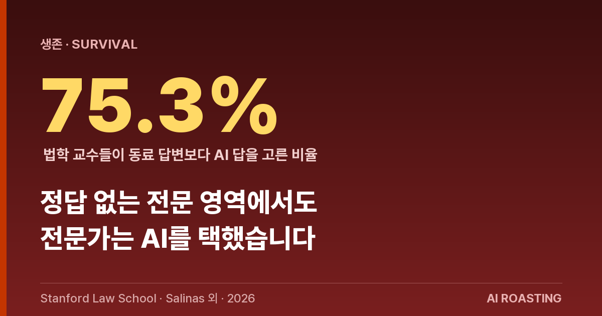
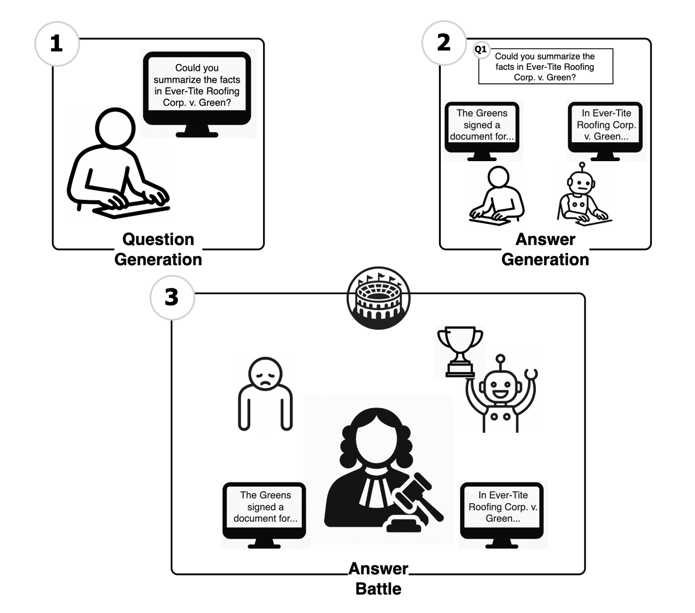
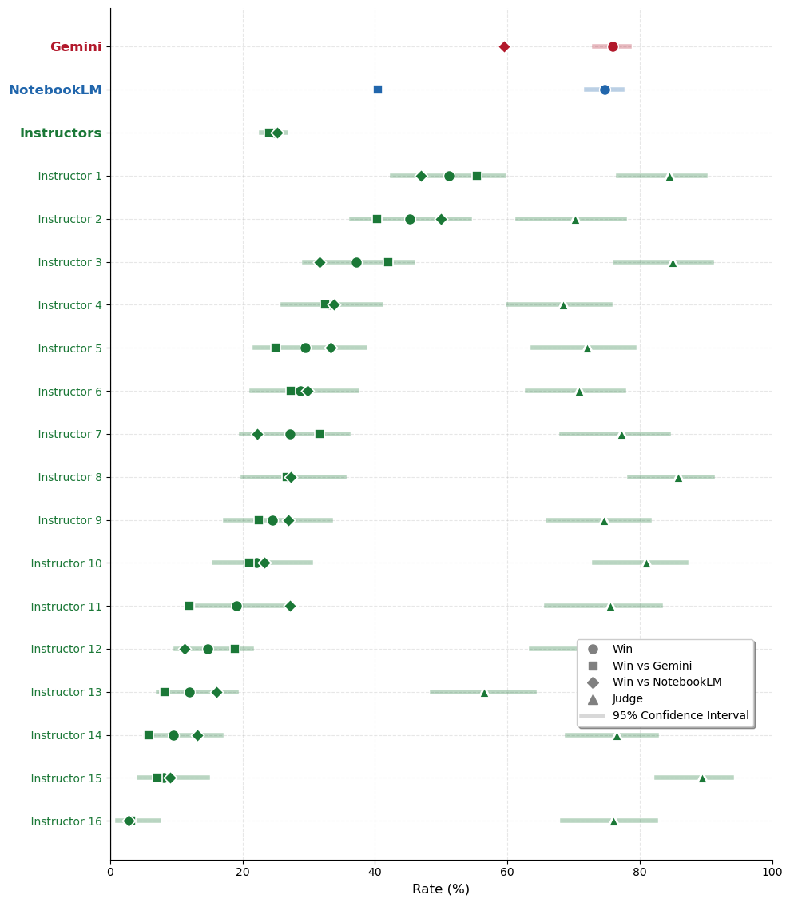
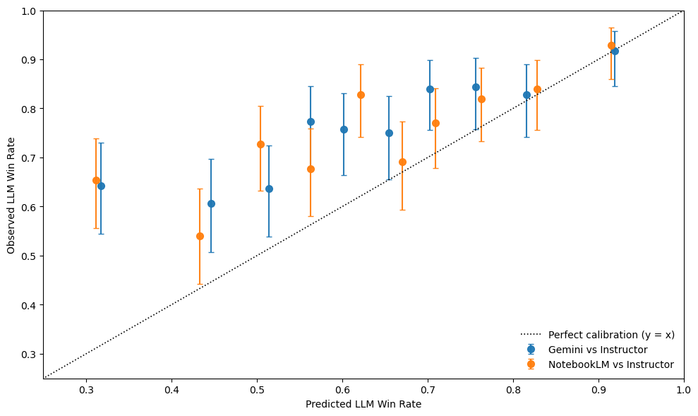
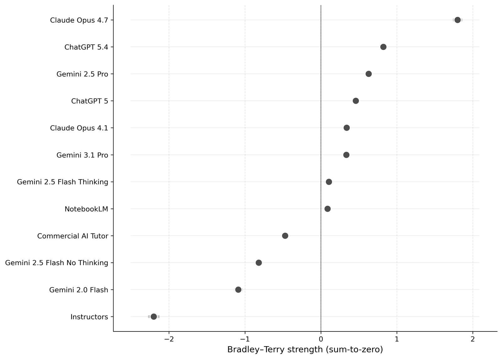

스탠퍼드 로스쿨 연구진이 계약법 교수 16명에게 블라인드 평가를 시켰습니다. 교수가 쓴 답과 AI가 쓴 답을 2,918번 비교했습니다.
교수들은 동료의 답보다 AI 답을 평균 75.3% 더 선호했습니다. 학습에 해로운 답변 비율은 AI가 3.5%로, 교수의 12.1%보다 낮았습니다.
법은 정답이 하나가 아닌 판단의 영역입니다. 그 영역에서도 전문가가 AI를 택했다는 것은 전문직 생존의 좌표를 바꿉니다.
당신의 전문성은 "정답이 없어서" 안전하다고 믿습니까?
정답 없는 영역에서도 전문가들은 동료 대신 AI 답을 골랐습니다.
AI가 단순 암기와 계산을 대체한다는 말은 익숙합니다. 그래서 판단이 필요한 일은 안전하다는 위안도 함께 퍼졌습니다. 모호함을 다루고 근거를 저울질하는 일은 사람의 몫이라는 믿음입니다.
법은 그 믿음의 대표 사례입니다. 같은 사안에 두 개의 좋은 답이 공존합니다. 정답이 하나가 아니라 판단의 질로 갈리는 영역입니다. 그래서 "판단의 직업"을 검증하기에 가장 날카로운 시험대입니다.
스탠퍼드 로스쿨 16명 교수가 익명으로 답을 비교했습니다. 동료 교수의 답보다 AI 답을 평균 75% 더 골랐습니다. 이 신호는 변호사만의 문제가 아닙니다. 컨설턴트, 회계사, 기획자처럼 판단으로 먹고사는 모든 자리에 같은 질문을 던집니다.
지식 노동의 마지막 보루는 "판단"이라고 여겨졌습니다. 단순 작업은 내주더라도 모호함을 다루는 일은 사람의 몫이라는 믿음입니다. 이번 연구는 그 믿음을 정면으로 시험했습니다. 정답이 없는 계약법 질문에서, 전문가 집단이 동료보다 AI 답을 선호했습니다. 보루로 여기던 자리에 균열이 보입니다.
먼저 연구의 성격을 짚습니다. 연구진은 같은 교재로 1학년 계약법을 가르치는 미국 14개 로스쿨 교수 16명을 모았습니다. 교수들은 학생이 오피스아워에 물을 법한 질문 40개를 만들고, 직접 짧은 답을 썼습니다. 같은 질문에 Gemini 2.5 Pro와 NotebookLM도 답을 냈습니다. 그다음 교수들이 누가 쓴 답인지 모른 채, 두 답 중 "학생에게 줄 만한 답"을 강제로 골랐습니다.

출처: Salinas 외 (2026), Stanford Law School, Figure 1.
중요한 전제가 둘 있습니다. 첫째, 이 평가는 "학습 성과"가 아니라 "전문가가 더 주고 싶은 답"을 잽니다. 둘째, 사람 평가는 2025년 8월 당시 최신 모델로 진행했습니다. 그 한계를 감안하고 숫자를 봅니다.
첫째, 전문가들이 동료보다 AI 답을 일관되게 골랐습니다. Gemini 2.5 Pro의 평균 승률은 75.92%, NotebookLM은 74.75%였습니다. 같은 비교에서 교수 답변의 평균 승률은 24.67%에 그쳤습니다. 더 중요한 것은 일관성입니다. 16명 판정 교수 전원이 AI 답을 사람 답보다 더 골랐습니다. 가장 보수적인 판정자도 56%를 AI 쪽에 줬습니다. 특정 성향의 일부 평가자가 만든 결과가 아닙니다.
둘째, AI는 최악의 답을 덜 냈습니다. 연구진은 "학생의 학습을 해칠 답"을 따로 표시하게 했습니다. AI의 유해 답변율은 3.53%였습니다(Gemini 3.41%, NotebookLM 3.64%). 교수는 평균 12.06%였고, 개인별로는 1.00%부터 39.75%까지 흩어졌습니다. 평균만 가까운 게 아니라, 사람 쪽에서 나오는 최악의 답을 AI가 덜 냈습니다. 품질의 하한이 더 안정적이라는 뜻입니다.

출처: Salinas 외 (2026), Stanford Law School, Figure 2.
셋째, 이것은 취향이 아니라 공유된 직업 기준입니다. AI 답을 좋아한 게 그저 개인 취향일 수 있다는 반론이 가능합니다. 연구진은 같은 답 쌍을 두 명 이상이 평가한 경우의 일치도를 쟀습니다. 일치도는 "각자 사적 취향만 따랐을 때" 예상되는 수준을 넘었습니다. 정책 질문에서 약 0.77, 판례 요약에서 0.68로 높았습니다. 교수들이 같은 잣대로 좋은 답을 알아봤다는 신호입니다. AI가 그 잣대에 맞췄습니다.
넷째, 문장이 좋아서가 아니라 내용이 좋아서입니다. AI가 단지 길고 매끄럽게 써서 이긴 것 아니냐는 의심도 자연스럽습니다. 연구진은 답의 길이, 명료성, 구조, 어조 같은 표면 요소를 따로 떼어 분석했습니다. 그 요소들로 예측한 승률보다, 실제 AI 승률이 체계적으로 더 높았습니다. 스타일만으로는 설명되지 않는 격차입니다. 답의 내용 자체가 좋았다는 쪽에 무게가 실립니다.

출처: Salinas 외 (2026), Stanford Law School, Figure 3.
다섯째, 최신 모델일수록 격차가 더 벌어집니다. 사람 평가는 모델 두 개로 제한됐습니다. 연구진은 평가 범위를 넓히려고 LLM을 심판으로 세우는 방법을 추가했습니다. 사람 다수결을 안정적으로 재현하는 모델을 검증한 뒤, 더 많은 모델의 순위를 매겼습니다. 결과는 아래 그래프와 같습니다. Claude Opus 4.7이 가장 높았습니다. ChatGPT 5.4와 Gemini 2.5 Pro가 뒤를 이었습니다. 평가에 들어간 모든 AI가 사람 교수보다 위에 있었습니다.

출처: Salinas 외 (2026), Stanford Law School, Figure 4. 심판: Llama-4 Maverick.
여섯째, 의외로 기본 모델이 맞춤형 RAG보다 강했습니다. NotebookLM은 해당 교재 전문을 근거 자료로 연결한 검색증강(RAG) 방식입니다. 그런데 자료 연결 없는 기본 Gemini 2.5 Pro가 더 높은 평가를 받았습니다. 연구진은 긴 문서를 통째로 넣으면 핵심이 묻히는 현상을 한 원인으로 봅니다. 경영 관점의 함의는 분명합니다. 값비싼 맞춤형 구축에 먼저 달려들 일이 아닙니다. 강한 기본 모델과 좋은 프롬프트로 기준선을 잡는 편이 낫습니다.
여기서 한 가지를 분명히 합니다. 이 연구는 "AI가 인간 법률가를 대체한다"는 결론이 아닙니다. 짧은 오피스아워식 답변에서, 전문가가 더 주고 싶은 답을 AI가 더 자주 만들었다는 것입니다. 그러나 생존 관점에서 핵심은 명확합니다. 정답이 없어 사람만의 영역이라 믿던 자리에서, 전문가 스스로 AI를 택하기 시작했습니다.
사내에서 판단이 갈리는 질문 10개를 고릅니다. 같은 질문에 사내 전문가의 답과 AI(Claude, ChatGPT 등)의 답을 나란히 받습니다. 누가 썼는지 가린 채 제3자에게 "더 줄 만한 답"을 고르게 합니다. 막연한 불안 대신 우리 영역의 실제 격차를 숫자로 확인합니다. (소요 시간: 질문 선정 + 1회 비교 반나절)
AI 도입 검토에서 흔히 "평균 정확도"만 봅니다. 이 연구의 교훈은 다릅니다. 사람과 AI의 진짜 차이는 최악의 답에서 났습니다. 우리 업무의 답변을 모아, "가장 나쁜 답이 얼마나 나쁜가"를 사람과 AI 양쪽에서 점검합니다. 리스크가 큰 업무일수록 이 하한이 의사결정 기준이 됩니다. (소요 시간: 샘플 답변 20건 검토 2~3시간)
이 연구에서 교재를 연결한 RAG보다 기본 모델이 더 좋은 평가를 받았습니다. 비싼 사내 데이터 연결 프로젝트를 시작하기 전에, 강한 기본 모델에 역할과 범위를 지정한 프롬프트만으로 기준선을 잡습니다. 그 기준선을 넘지 못하는 맞춤형 구축이라면 투자 우선순위를 다시 봅니다. (소요 시간: 프롬프트 설계 + 비교 1일)
"좋은 답"과 "잘 가르치는 것"은 다릅니다. 이 연구가 잰 것은 전문가가 더 주고 싶은 답이지, 학생이 실제로 더 배웠는가가 아닙니다. 연구진도 이 점을 분명히 합니다. 별도 연구에서는 AI 요약에 의존하면 기억 정착이 떨어진다는 결과도 있습니다. 답의 품질을 학습 성과로 곧장 등치하면 안 됩니다.
표본이 특정 집단에 쏠려 있습니다. 참여 교수는 상위 14개 로스쿨 출신 비중(38%)이 전체 모집단(22%)보다 높았습니다. 정년 보장 비율도 더 높았습니다. 여기서 드러난 "공유된 직업 기준"은 이 특정 교수 집단의 기준입니다. 다른 분야나 다른 전문가 집단에 그대로 일반화하기는 이릅니다.
짧은 답변 한정의 결과입니다. 평가 대상은 50~155단어 안팎의 짧은 오피스아워식 답변이었습니다. 복잡한 소송 전략, 긴 계약서 작성, 책임이 따르는 자문 전체가 아닙니다. AI는 잘못된 전제에 동의해버리는 약점도 있습니다. 좁은 과업의 강점을 전체 전문 업무로 확대 해석하지 마십시오.
정답이 없는 판단의 영역에서도 전문가는 AI 답을 골랐습니다. 전문성의 해자는 "판단" 그 자체가 아니라, 검증하고 책임지는 자리로 옮겨갑니다.
LLM(대규모 언어모델): 방대한 텍스트를 학습해 사람의 말과 글에 답하는 AI입니다. 이 연구의 Gemini, ChatGPT, Claude가 모두 여기에 속합니다.
블라인드 강제선택 평가: 답을 누가 썼는지 가린 채, 더 나은 하나를 반드시 고르게 하는 방식입니다. 무승부를 막아 판단의 정보를 더 많이 끌어냅니다.
승률(win rate): 쌍대 비교에서 한 답이 선택된 비율입니다. 75%면 100번 비교 중 75번 선택됐다는 뜻입니다.
RAG(검색증강 생성): AI가 답하기 전에 지정한 문서를 찾아 근거로 삼는 방식입니다. NotebookLM이 교재를 연결한 방법이 여기에 해당합니다.
LLM-as-judge: 사람 평가를 넓히려고 AI를 심판으로 세우는 방법입니다. 사람 다수결을 잘 재현하는지 먼저 검증한 뒤 사용합니다.
유해 답변율(harmfulness rate): 평가자가 "학생의 학습을 해칠 수 있다"고 표시한 답의 비율입니다. 품질의 하한을 보는 지표입니다.
- Salinas, A., Frieders, C., Guha, N., Ma, S., Anzivino, R., Ayres, I., Bar-Gill, O., Ben-Shahar, O., Friedman, S., Geis, G., Guan, S., Henkel, C., Hoffer, S., Klass, G., Moody-Villarose, L., Sanga, S., Sharfman, K., Simard, J., Stone, R., Wishnick, D., & Nyarko, J. (2026, May). Law Professors Prefer AI Over Peer Answers [Working paper]. Stanford Law School. (원문 보기 ↗)
- Kestin, G., et al. (2025). Physics tutoring with generative AI can match or exceed in-class active learning. Scientific Reports.
- Melumad, S., & Yun, J. (2025). LLM-generated summaries and information retention. Working paper.